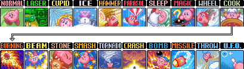

Dark Mind IV-VI
"More people spend time complaining about luck in Katam then they spend running Katam"
- swordsmankirby
Dark Mind IV
This time, the double star will not kill him but leave his health pretty low. Once hitting the double star, you want to wait for a green star which will give you a mix and you want to time it for UFO. UFO appears once the roulette begins to slow down making the window larger than 4 frames to time. To make it easier you can pause buffer during the mix and wait for UFO to appear meaning you shouldn't miss it unless you do not pause buffer fast enough.
Pletty Mixes
Japanese runner Pletty7 has come up with several backups which inhale two stars to mix for UFO without a green star. In summary, UFO is the:
- 19th ability when inhaling a green star first
- 20th ability when inhaling a blue star first
- 21st ability when inhaling a red star first
- 6th ability when inhaling a purple star first
Dark Mind V
Dark Mind V has several patterns he can do, but you want to try and hit the mirrors. This is because hitting them deals the same damage it would deal to the eye without the eye closing. The only pattern you don't want to see is a rare pattern where he will shoot lasers from the top since Dark Mind is invincible while the eye is flashing.
UFO Mix Alternative: Dark Mind with Master
This will lose 30 seconds to an optimal UFO Mix. I personally do not recommend doing this unless you specifically want to use no mixes in your run.
Dark Mind VI
Mash the A & B buttons as fast as possible. You want to try and position yourself to the right side of the eye but still be in range to hit Dark Mind if he is standing still. Try to get hit as little as possible because if you get hit, you will not be able to shoot for a second. I reccomend calling the AI Kirbies to refill your health if you have 4 or less health after getting the final hit against Dark Mind V. If you die against Dark Mind VI with an AI Kirby present, the fight will not restart. The same can be done for Dark Mind V after you enter the room.